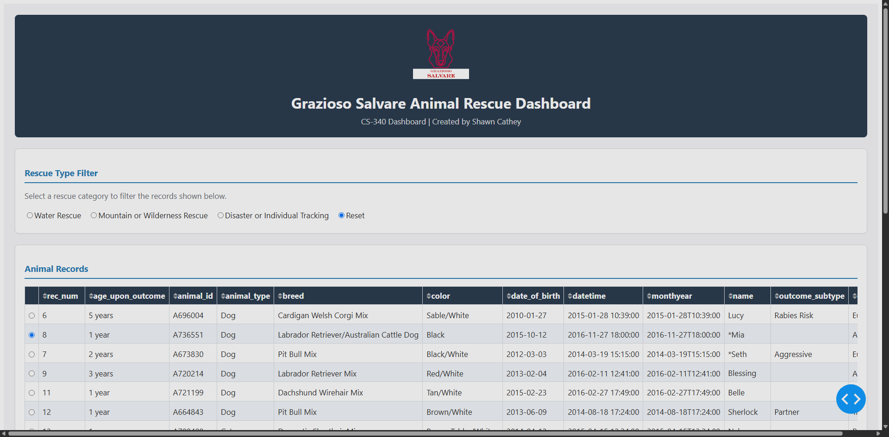
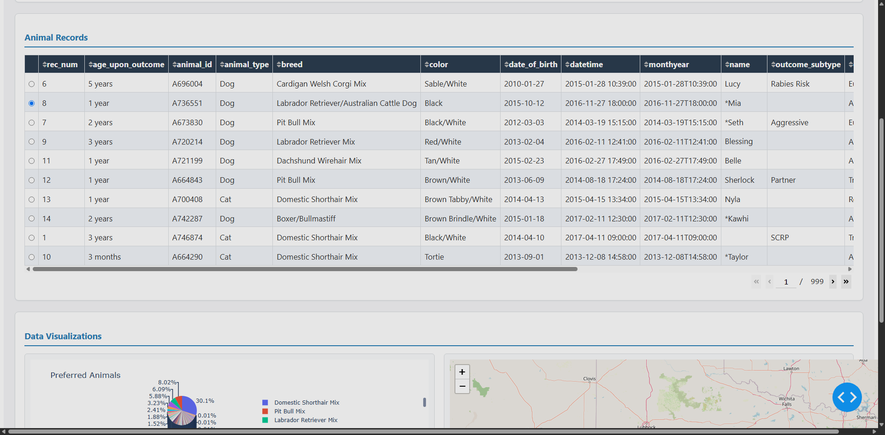
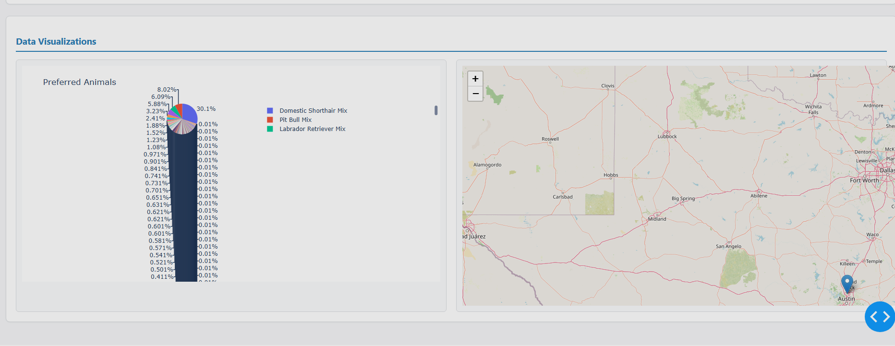

Grazioso Salvare Animal Rescue Dashboard
CS 499 Computer Science Capstone
Project Gallery

Original Dashboard

Final Enhanced Dashboard

Software Engineering

Databases
Final Artifact Overview
This project represents the completed enhancement of the Grazioso Salvare Animal Rescue Dashboard originally developed in CS 340: Client/Server Development. Throughout the CS 499 Computer Science Capstone, I expanded the application through three separate enhancements that focused on software engineering, algorithms and data structures, and database functionality while preserving the original dashboard experience. Rather than creating a completely new application, the goal of the capstone was to evaluate an existing project, identify meaningful improvements, and build upon the original code without changing the application's intended purpose. The completed artifact demonstrates how each enhancement contributed to making the application more organized, more efficient, and easier to maintain.
Technologies Used
- Python
- Jupyter Notebook
- Dash / JupyterDash
- Plotly
- dash-leaflet
- MongoDB
- PyMongo
- Pandas
- Git & GitHub
Capstone Enhancements
-
Software Design & Engineering
Improved application architecture, code organization, styling, and maintainability. -
Algorithms & Data Structures
Added advanced searching, optimized filtering, and improved overall application efficiency. -
Databases
Expanded CRUD functionality, improved MongoDB queries, and added input validation.
Skills Demonstrated
This completed artifact demonstrates full-stack software development through the integration of application architecture, CRUD operations, MongoDB querying, search optimization, data validation, object-oriented programming, software maintenance, and professional software documentation.
Program Outcomes Demonstrated
- Collaborated through technical documentation, milestone narratives, code reviews, and professional communication.
- Communicated technical concepts through design documents, reflections, and software documentation.
- Designed, evaluated, and enhanced an existing software solution while preserving its original functionality.
- Applied industry-standard tools and technologies including Python, Dash, MongoDB, Pandas, Plotly, Git, and GitHub.
- Applied secure software development practices through input validation, database design, and responsible software engineering.
Reflection
Completing this artifact demonstrated how an existing application can be systematically evaluated and improved without changing its intended purpose. Throughout the capstone, I strengthened my skills in software design, algorithms and data structures, and database development while gaining experience organizing larger projects, improving maintainability, and documenting technical decisions. The completed dashboard reflects not only the enhancements made to the application, but also the growth of my technical knowledge and confidence throughout the Computer Science program.
Repository
Authorized collaborators only.
The complete source code, Jupyter Notebooks, supporting modules,
milestone narratives, and project documentation for the completed
capstone are available in the GitHub repository.